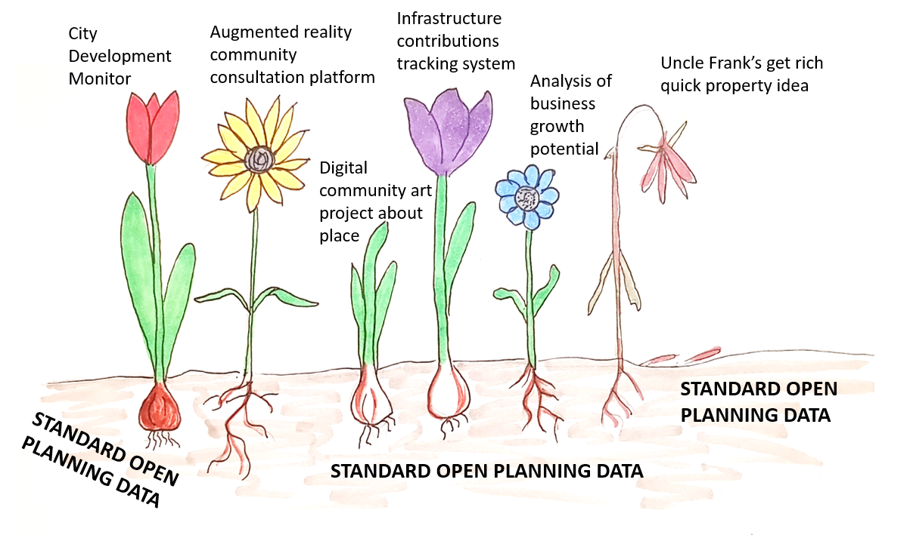
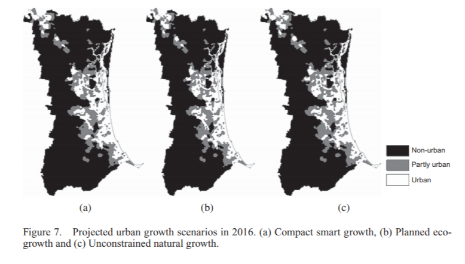
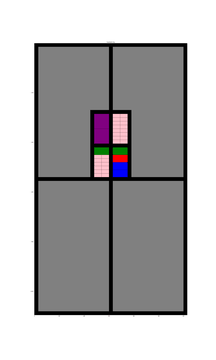
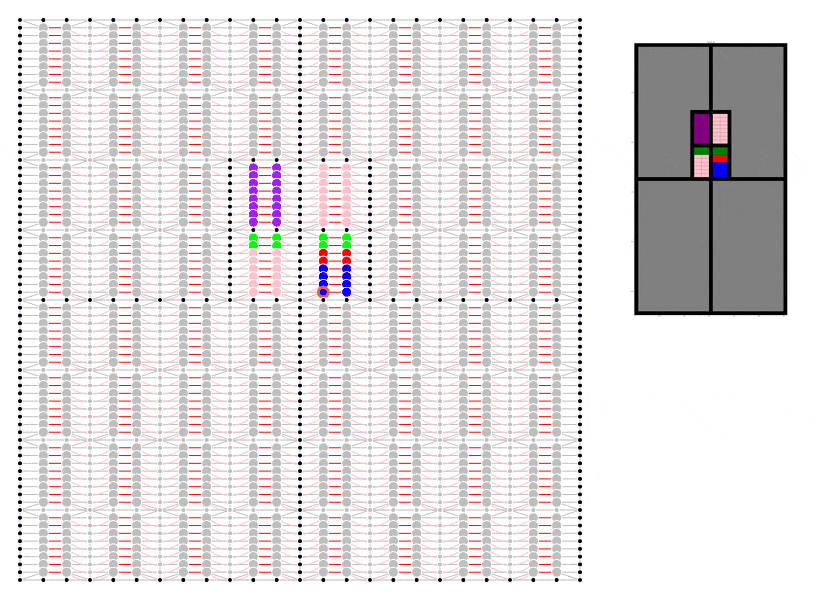

Fake It Till You Make It
(An idea to test an Open Planning Data Specification)
31 July 2018
My previous post outlines the case for a standard format to collect and publish planning data, and includes a rough sketch of what such an ‘Open Planning Data Specification’ might look like. Standardising data is a pre-requisite to realising the benefits of a truly digital planning system, ensuring planners, politicians, the community and the software applications they use can keep track of development through each stage and across the entire city.

Standardised Open Planning Data is the foundation soil in which digital planning can flourish...
As I see it, we have two options for testing this idea:
Option One: Spend weeks trying to clean and reformat data from multiple sources, assuming it is possible to line up records from different agencies and authorities. It may not be.
Option Two: Synthesise the data (i.e. fake it).
How do we manually create data for the hundreds of thousands of development records that make up a city? We don’t. Instead we leave the computer running and let our city grow.
What I am proposing is a cellular automaton model. Cellular automata are a type of iterative model made up of a field of cells that replicate themselves or die according to very simple rules. People tend to get excited about them due to the complex structures and patterns that result, mimicking biological systems. It is a technique used in generative architecture and design.
Simple cellular automaton model generating complex structures (source: Giphy)
Cellular automata have long been used by academics to study the growth of cities. The models allow the exploration of the main drivers of a city’s development by adjusting the underlying rules to try and simulate the real spatial pattern of growth. Once a model has been refined to the point that it is able to, more or less, recreate historical growth patterns, it is sometimes run into the future as a predictive tool for future development.

Image from an excellent publication by Yan Liu (2012) Modelling sustainable urban growth in a rapidly urbanising region using a fuzzy-constrained cellular automata approach
Whilst a great academic tool have I ever seen it used for this purpose in a practical setting? Not personally. Do I think it should be? To be honest, I am yet to be convinced*. Would any of my planning colleagues be able to tell me what cellular automata are? Probably not.
… this is beside the point though. What cellular automata modelling may instead offer us in a practical sense is the ability to generatively synthesise a lot of planning data. Using a simple layout of a rectangular grid we can easily make a model that subdivides and grows, development approval by development approval, somewhat randomly, according to simple probability functions describing things like:
- The desired land use mix.
- The likelihood for a certain site to be chosen with regard to:
- Neighbouring development
- Access to infrastructure
- Age of existing development
- Other desired constraints or incentives
- The form of the development proposal with regards to height, floorspace and number of dwellings.
- The likelihood of a development proposal to be approved with regards to the proposed form and constraints
- The likelihood of an approved development to be modified.
- The likelihood of an approved development to be completed before the permit expires.

At each iteration of the model the relevant information regarding the subdivision, approval and completion can be recorded in the desired format. When the model has generated enough data the model can be stopped and the data can be taken and tested to see if the format is easy to use and records enough information to track development to recreate the growth of the city. Perhaps it could be used to create demo software applications.
For this purpose, does it matter if the model is not exactly recreating the historic development of a real city? Not really, although adjustments could always be made to make it better.
To demonstrate I have even made a start on my own code which I have put here. ‘Fakefield City’ starts out as a series of large equally sized rectangular rural land holdings which are later subdivided into equally sized rectangular city blocks which can be further subdivided into lots. The size of the lot depends on the nature of the development but to keep things simple it is currently always a multiple of the smallest permissible size. This code uses the igraph package in Python to pre-define every possible land subdivision and the relationship between neighbouring lots and transport infrastructure.
If you are looking at the code, at this point I really have only set it up to create a blank slate. The animation uses only a few simple development rules that do not involve randomisation:
- Get as close to the centre as possible
- Try to maintain set proportions of land use by area
- Use undeveloped land neighbouring existing development (of the same type) first

Animation showing underlying igraph network for Fakefield City cellular automata model. Different colours represent different land use types.
I have not yet set it up to record data, although I do have the geometry for the subdivision working. Nevertheless, I hope it already it serves to illustrate the concept.
So, a bit of a strange idea. Could it work? If it does would it help? Let me know your thoughts on LinkedIn or Twitter @ClaireCities!
 @ClaireCities
@ClaireCities